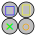
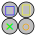
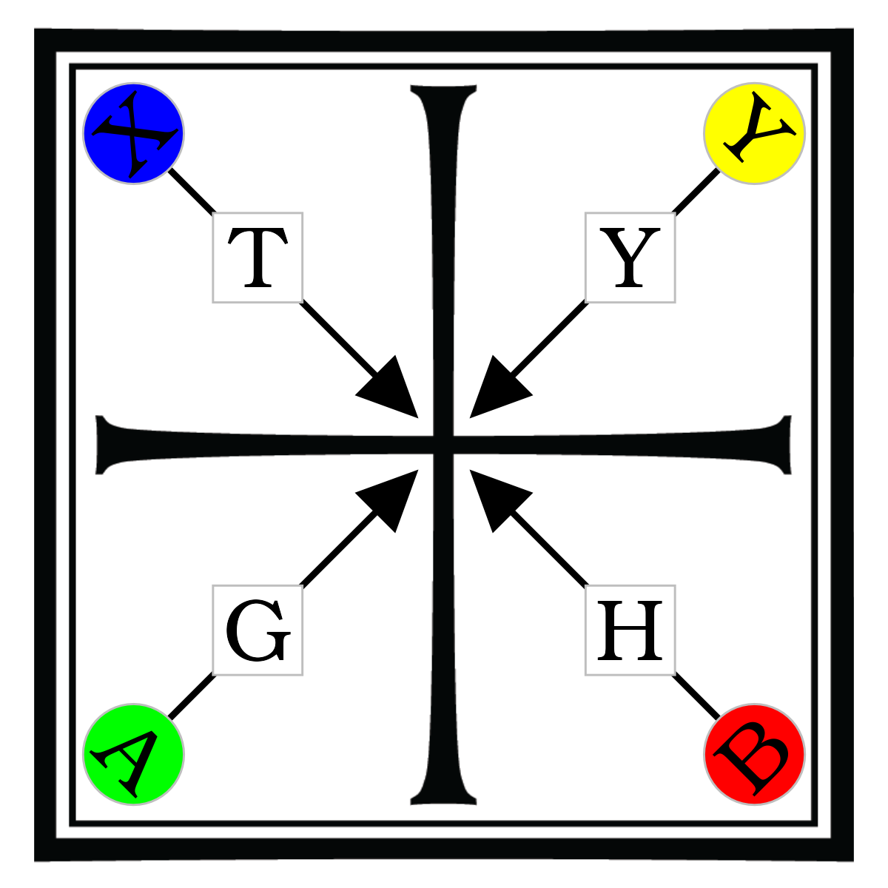

基本
基本
操作に関する基本事項
移動
操作は鉄拳と似ている. つまり, 左右キーが前進・後退, 上下キーが奥・手前移動で, ジャンプはできない.
2024.07.09 時点では, 移動処理が少し変である. 頻繁にコマンドの暴発が発生していることから, どうも十字キーの入力が相手との相対的な方向で判定されている気がする. 加えて, 相手キャラクターへの自動追従も時々おかしくなり, 普通に入力しても殆どの場合であさっての方向へ繰り出されほぼ命中しない「ハズレ技」とそうでない攻撃に分かれている気がする. 開発者の意図した動きなのか, バグなのかは不明だが, 前者だとしたら相当難易度が高くなるので, 私は物理エンジンの更新が影響しているのではないかと疑っている.
攻撃
攻撃操作も鉄拳と似ている. デフォルトでは, を使用する. ゲームパッドなら, XBOX, PS でそれぞれ   に対応する. 4つのボタンは四方向からの攻撃におおむね対応している.
 に対応する. 4つのボタンは四方向からの攻撃におおむね対応している.  ,
,  は左右の斬り下ろし攻撃で,
は左右の斬り下ろし攻撃で,  ,
,  は左右の斬り上げというように, ほとんどの基本攻撃は対角線を描くようになされる.
は左右の斬り上げというように, ほとんどの基本攻撃は対角線を描くようになされる.

ほとんどの場合, 移動しながら攻撃ボタンを押すと, 足を止めて攻撃する場合と異なる動作となる. しかし, このことは後述のコマンド表に書かれていない.
攻撃の方向
TODO
現代フェンシングでは quarte, sixte, octave, septime の四方向なのでHQとも合っているが, quart と方向が全く違うのでややこしいか?
自動防御 (パリィ)
HQでは, キャラクターが自動で防御姿勢を取り, 相手の攻撃を防御できる. 開発者はこれをパリィと呼んでいる. やはり鉄拳と同様に, コマンド攻撃をしていない状態であれば, 相手の攻撃に合わせて自動的に防御姿勢を取るようになっている. 移動ボタンを押していても, 攻撃さえしていなければ自動防御は発動している. 両者ともに攻撃しないで数秒経つと, キャラクターは初期状態の姿勢に戻る.
自動防御の姿勢はキャラクターごとに5つ以上存在する. 全てのキャラクターは, 基本の4つの攻撃動作に対応する防御と, 一部のコマンドで実行できる, 足元を狙った攻撃に対する防御姿勢の5つの姿勢が用意されている. 加えて, 一部のキャラクターは突き攻撃に対しても専用の防御姿勢があるが, 4方向の防御のどれかで代用されることもある. 自動防御の姿勢はキャラクターごとに決まっているため, 攻撃の太刀筋やお互いの位置取りによっては, 適切な方向の防御姿勢であっても防御をすり抜けてしまうことがあるため, 絶対ではない. 特に, ほとんどのキャラクターは, 突き攻撃に対する自動防御の隙が多く, より確実に突きを防御するには後述のロングガードの構えが必要になる.
防御判定はリアルタイムの物理演算によってなされるため, 剣の重さ, スタミナ, など条件によっては攻撃を受けても力負けして押し込まれることがある. 当たり判定もリアルタイムでなされるため, 例えば左下の防御姿勢状態から, 最も離れた右上の防御が必要な時に, 防御姿勢の変更が間に合わずに攻撃が通ることもある. よって, 至近距離で刃の先端近くで受けるより, 離れて刃の根本で受けたほうが力負けしにくくなるため, 防御も成功しやすい. 剣を強く弾かれたときは, 通常よりも大きな効果音が鳴る.
自動防御の例, 当たり判定はあくまでリアルタイムなため, 同じキャラクターの同じ攻撃であっても, 位置取りによっては防ぎきれないことがある.
よって, よくある格闘ゲームのように, 攻撃と防御を上段下段(あるいは中段)に分類して判定しているわけではない. 便宜的に, 攻撃の位置は 頭部から胸部までの上段, 腹部から膝上までの中段と, 膝下の下段に3分類できる. だが, サーベルを使った斬撃は上段中段どちらにも届く場合が多く, 腕の位置も防御姿勢によって変わりうるため, 厳密に分けられるわけではない.
リポスト
パリィしてすぐに攻撃ボタンを押すと, リポストになる. 一部のキャラクターや攻撃ボタンには, リポスト時により速く反撃できる補正がつくものがある.
カウンター
HQではリアルタイムで当たり判定が計算されるため, 相手の攻撃に対してこちらも攻撃を重ねることで防御の代わりになることがある. 更に, 物理演算の結果によっては, どちらかが押し負けて攻撃が届くことがある. 攻撃アニメーションを利用して相手の攻撃を回避しつつこちらの攻撃だけを当てるという使い方もできる.
コマンド
格闘ゲームによくある, 十字キー+攻撃ボタンのようなコマンドは少なく, ほとんどのコマンドは順番にタイミングよく押すことで発動する.
攻撃の中には, いくつか特殊なものがある.
- フェイントで相手の構えを変える「威嚇」
- 相手を掴み, 成功すると必ず相手を倒せる「掴み」
- 掴みに対する投げ抜け操作はレバガチャではなく後退ボタンである
- 相手を押して構えを崩す「押しのけ」
- 突き攻撃に対処し, 使用可能なコマンドも変える「ロングガード」の姿勢
がある. ゲームパッドでは, これらはバンパー・トリガーキーで入力できる. しかし, 2024.07.07 時点では ゲーム内のコマンド表がめちゃくちゃ間違っている.
- RBが威嚇
- RTが押しのけ
- LBが掴み
- LTがロングガード
である.
ロングガードと構え
ほとんどのキャラクターにはロングガードという通常とは異なる構えがある. この構えでは, 剣の先端を相手に向け, 腕を伸ばした姿勢になる. ロングガードの持続中は, 使用できるコマンドが変化し, なおかつ突き攻撃に対する自動防御が強化される. 一方で, 斬撃に対して自動防御が発生しなくなり, 斬撃によって剣を叩かれると姿勢を崩しやすくなる.
レイピアを使用するキャラクターは, 普段から剣を水平に構えているので, 通常の構えとロングガードの性質が逆転している.
フェイント
自動防御を無力化する「フェイント技」がいくつか存在する. 誤った方向に自動防御を誘発させるような技で, コマンド表で「フェイント」と書かれているものが該当する. 名前にフェイントとついていても, フェイント効果がないものもある. 加えて「威嚇」コマンドは一瞬足踏みするだけで攻撃はしないが, 同様に相手の自動防御の向きを切り替えさせる効果がある.
これ以外にも, 変則的な動きで, 対人戦において相手プレイヤーの誤判断を誘いやすいコマンドや, 自動防御の隙間をぬって攻撃するようなコマンドがいくつかある. これらに自動防御を無効化する効果はないが, こういった技も広義のフェイント技とみなせる.
キャンセル
攻撃してすぐに後退ボタンを押すと, 即座に攻撃動作をキャンセルして元の姿勢に戻れる. 全ての攻撃動作でできるわけではない.
HP
HQではほとんどが一撃か数発の攻撃で勝敗が決するが, 処理の内部では体の部位ごとにHPが設定されている. いずれかの部位のHPがゼロになるか, 合計HPが一定以下になると負けになる. 頭部と利き腕が最もHPが少なく, 胴体や利き腕と反対の足はHPが高い. HPが高い部位へ攻撃を当てても, 一撃で勝敗がつかないことがある.
以下は非公式の検証動画である. 時間が経っているので, 細かい数値は変更されている可能性がある.
利き手にダメージを受けると攻撃速度が遅くなったり, 脚部にダメージを受けると, 移動速度に影響が出たり, ステップ移動ができなくなったりすることがある.
スタミナ
キャラクターは攻撃やステップ移動を行うとスタミナを消費する. これらの行動を取らずにいると, スタミナは回復する. スタミナが50%未満になると, 動きが遅くなったり構えが乱れたりする. スタミナが底を突きそうな状態では, コマンドもまともに受け付けなくなる. スタミナが低下している状態では, 画面端が青く点滅する. スタミナの最大値は現在のHPに対応している.
全体的な傾向として, 攻撃は空振りした時よりも, 相手に防御され時のほうがスタミナ消費が少ない. (なぜ?)
Right of Way
v.2021.10.29.0で追加されたルールを指す. いわゆるフェンシングの Phrase d’arme であり, 対戦モードなどで従来ルールと選択できる.
従来は相打ちは引き分けだったが, このルールでは「優先権」のあるどちらかのプレイヤーのみが得点できる. その優先権は, 以下のような条件で獲得したり喪失したりする.
- 先に一歩踏み出す, 立ち止まった時点で無効
- 相手を後退させる
- 攻撃が空振りする, または防御された場合は優先権が相手に移る
- 一方的に攻撃を当てた場合はこれらの判定はなされず, 従来通りの勝ち点になる